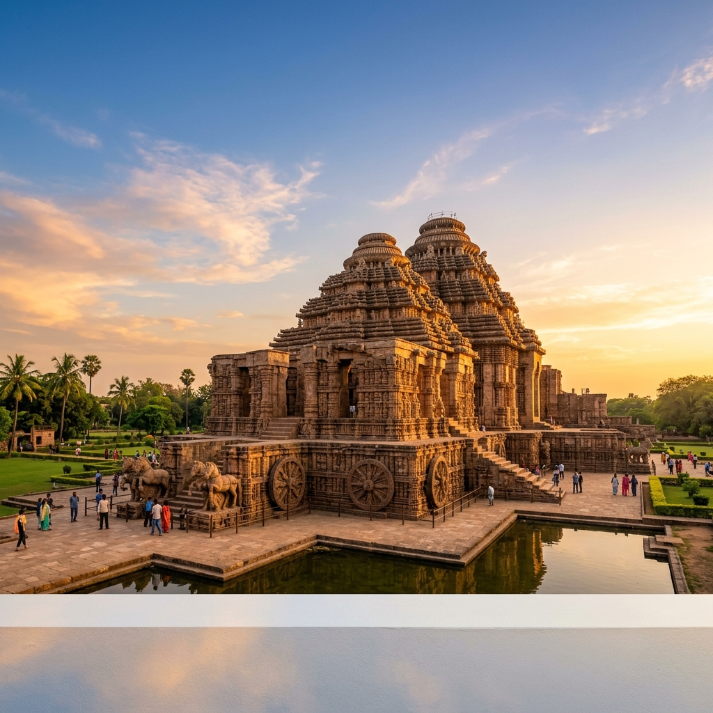

Archaeological Survey of India
Puri Circle
Preserving India's Heritage Since 1861
About ASI Puri Circle
The Puri Circle of the Archaeological Survey of India (ASI) is dedicated to the preservation, conservation, and research of the rich archaeological heritage of the Odisha region. With a legacy spanning over 160 years, we manage world-renowned monuments like the Konark Sun Temple (UNESCO World Heritage Site) and numerous other architectural marvels spanning from prehistoric to medieval periods.
The ASI Puri Circle oversees the protection and maintenance of centrally protected monuments and sites across multiple districts of Odisha. Our dedicated team of archaeologists, conservation architects, and heritage specialists work tirelessly to ensure these irreplaceable treasures are preserved for future generations.
Learn MoreOur Mission
To protect, preserve, and present India's archaeological heritage through scientific conservation, rigorous research, and public engagement — fostering an appreciation for our shared cultural legacy.
Quick Links
Visitor Information
Plan your heritage exploration